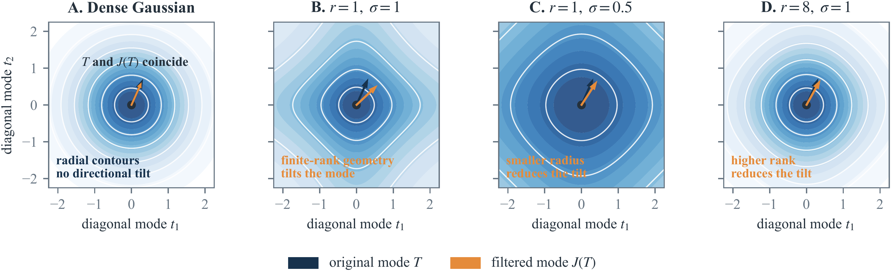
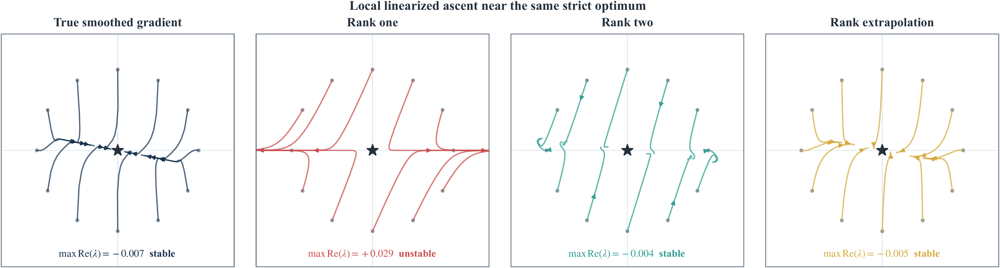
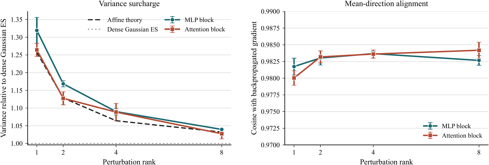

Low-Rank Perturbations in EGGROLL
September 27, 2026EGGROLL applies evolution strategies to large models by forming each perturbation from two thin random matrices. This makes the perturbation cheaper to construct and apply. It also gives the perturbation an unusual combination of properties: its covariance is the identity, while every individual draw has low rank. We wanted to understand what this construction changes about the update being estimated.
There are two separate effects. The expected update can differ from the update produced by dense Gaussian evolution strategies, while the additional sampling variance can remain small for wide matrices. We also introduce LOO-ROLL, a leave-one-out estimator that uses one model evaluation per direction and estimates each candidate’s baseline from the remaining candidates.

Figure 1. Finite-rank product perturbations distort the frequency geometry: the mean-field direction can tilt away from the smoothed-gradient direction. Smaller radius and higher rank move the transformation toward the dense-Gaussian case.
The expected update
Identity covariance describes an average over perturbations, while each individual draw remains constrained by its rank. A rank-one matrix, for example, cannot point in most full-rank directions. Because EGGROLL scores these product perturbations using the dense-Gaussian formula, its expected update is not generally the gradient of the smoothed objective.
In Fourier coordinates, each matrix mode of the smoothed gradient is transformed by (I + σ²L/r)⁻¹. This filter shrinks different directions by different amounts, rather than scaling the whole gradient uniformly. At finite rank, the resulting mean field can even be nonconservative: there may be no scalar objective whose gradient gives that update.
Quadratic objectives are a special case. For any quadratic, antithetic EGGROLL recovers the exact gradient in expectation, at every rank and perturbation radius. The difference appears when the objective has higher-order variation across perturbations. At a finite radius, that variation can affect stability.

Figure 2. A strict local maximum of the objective and its smoothed version can become repelling under the rank-one mean field. In this example, rank two and dense Gaussian ES remain locally attracting.
Here, the origin is a strict local maximum, but the rank-one mean field has a positive eigenvalue of about 0.029, so nearby points move away along one direction. Rank two is locally attracting in the same example. The example isolates a finite-radius effect that is not captured by identity covariance alone.
Finite-population variance
The variance calculation captures a separate effect. In a local affine model, the total variance of a rank-r estimate has the dense-Gaussian factor mn + 1 plus a finite-rank surcharge 2(m+n+1)/r. For a square weight matrix of width w, the surcharge relative to dense Gaussian ES is 2(2w+1)/[r(w²+1)], which scales as 1/(rw). At width 4096, the rank-one increase is about 0.098%. Thus a low-rank perturbation can alter the expected direction while contributing little additional sampling noise for a wide matrix.
A transformer-block experiment tests the variance prediction directly. The left panel compares single-direction estimator error with dense Gaussian ES; the right compares the sampled mean direction with the backpropagated block gradient. The measured rank dependence closely follows the affine prediction, while the mean directions remain strongly aligned.

Figure 3. Qwen3-0.6B transformer-block audit. Left: single-direction mean-squared error relative to dense Gaussian ES; the dashed line is the affine prediction. Right: cosine similarity between the mean perturbation update and the backpropagated block gradient. Each point averages four radii within a seed; bars show standard errors over three seeds.
LOO-ROLL
The usual antithetic estimator evaluates both +σE and −σE for every sampled direction. LOO-ROLL evaluates one side for each member of the population, then subtracts the average fitness of the other members as that sample’s baseline. This baseline is independent of the held-out member’s perturbation, making the estimator unbiased for the raw EGGROLL mean field before same-population score standardization. The low-rank representation and the rest of EGGROLL’s implementation remain unchanged; only the use of the population’s fitness values differs.
On transformer blocks, the leave-one-out estimator cuts update mean-squared error by roughly 49–50% at equal evaluation cost across the tested population sizes. At the same number of directions, its error is at most 5.2% higher, falling to 0.8% at a population of 128. A separate audit finds that at this population size the raw and standardized rank-one mean updates have cosine similarity 0.99970.
Post-training at matched wall time
We compared LOO-ROLL with antithetic EGGROLL at matched wall time across 14 model–task settings, using five paired seeds per setting. The suite includes Qwen3 models from 0.6B to 14B parameters and SmolLM2-1.7B. Eleven settings improve significantly in individual paired tests, and nine remain significant after Holm correction. None significantly favors EGGROLL. The table gives matched-time accuracy gains on GSM8K and MATH-500 at three model sizes:
Matched-wall-time accuracy gain for LOO-ROLL over antithetic EGGROLL, in percentage points. Positive values favor LOO-ROLL; each comparison uses five paired seeds.
| Task | 1.7B | 8B | 14B |
|---|---|---|---|
| GSM8K | +2.9 pp | +14.1 pp | +7.9 pp |
| MATH-500 | +12.2 pp | +8.4 pp | +8.1 pp |
In these runs, the lower evaluation cost allowed LOO-ROLL to test more directions within the same wall-clock budget while retaining EGGROLL’s low-rank implementation.
Limits and open questions
The finite-rank mean field and the variance of its Monte Carlo estimate are distinct parts of the analysis. In the affine model, the additional variance decreases with matrix width. Product perturbations can still tilt the expected update at finite radius because their distribution is not rotationally symmetric. The leave-one-out baseline concerns how the population evaluations are used and is independent of this geometric issue.
The exact mean-field calculation applies to the raw estimator before same-population score standardization, and the variance formula is exact in the affine model. Our post-training experiments cover two model families, the reported tasks, and scales up to 14B parameters. We have not yet tested larger models or other training recipes, and the interaction between population size and score processing in other post-training settings remains open.